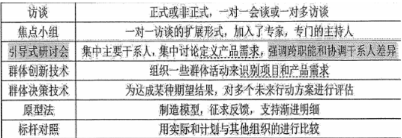
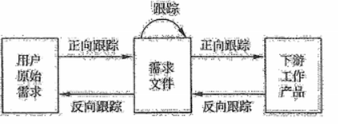
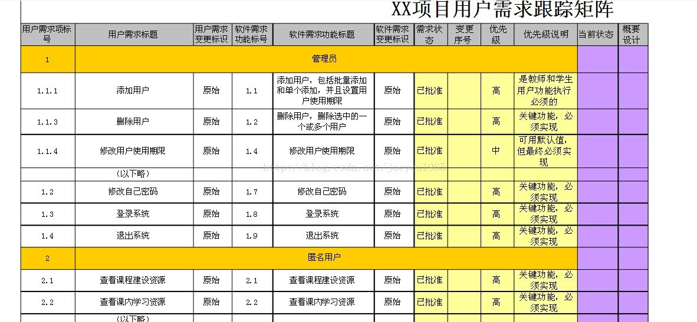
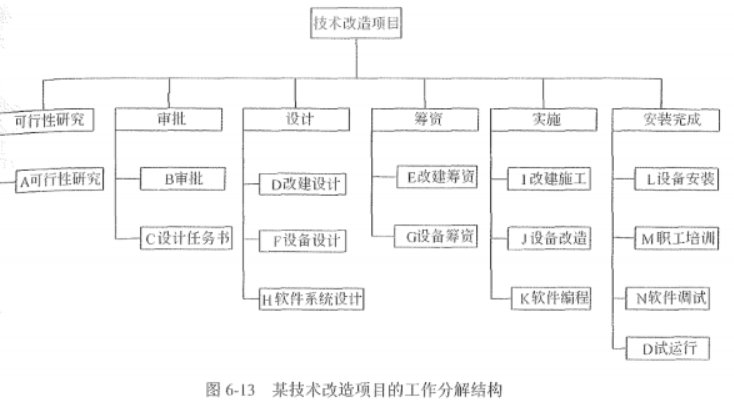

分值：3分
综合图谱

产品范围和项目范围
- 项目范围
- 经过批准的项目范围说明书
- WBS
- WBS词典
- 根据范围基准来衡量项目范围是否完成
- 产品范围
- 是项目范围说明书的重要组成部分
- 根据产品是否满足产品描述来判断产品范围是否完成
范围管理计划内容
- 如何制定项目范围说明书
- 如何根据范围说明书创建WBS
- 如何维护和批准WBS
- 如何确认和正式验收已完成的项目可交付成果
- 如何处理项目范围说明书的变更，与实施整体变更控制过程相连
项目范围说明书的内容
- 产品范围描述
- 验收标准
- 可交付成果
- 项目的除外责任
- 制约因素
- 假设条件
需求管理计划
- 描述在项目生命周期内如何分析、记录和管理需求
- 内容
- 如何规划、跟踪和汇报各种需求活动
- 需求管理需要使用的资源
- 培训计划
- 项目干系人参与需求管理的策略
- 判断项目范围与需求不一致的准则和纠正流程
- 需求跟踪结构
- 配置管理活动
- 需求的特征
- 可跟踪性
- 可验证性：最基本特性
收集需求
收集需求的技术和工具

收集需求的输出
- 需求文件
- 业务需求
- 干系人需求
- 解决方案需求
- 项目需求
- 过度需求
- 与需求有关的假设条件、依赖关系和制约因素
- 需求跟踪矩阵
需求跟踪
正向反向跟踪

- 正向跟踪：检查需求文件中的每个需求是否在工作产品中找到对应点
- 反向跟踪：检查设计文档、产品构件、测试问道等工作成果是否都在需求文档中有出处
需求跟踪矩阵
表示需求和其他产品元素之间的联系链，将产品需求从其来源链接到能满足需求的可交付成果上

创建WBS
基本层次划分
- 里程碑：里程碑标志着某个可交付成果或者阶段的正式完成。重要的检查点是里程碑，重要的里程碑是基线。
- 控制账户：一种管理控制点。一个控制账户可以有多个工作包，但一个工作包只属于一个控制账户
- 规划包：控制账户之下、工作包之上的WBS要素。随着情况的逐渐清晰，规划包最终被分解成工作包和相应的具体活动
- 工作包：建议大小：最少8小时，最多80小时
- WBS词典：描述WBS各组成部分的文件
项目工作分解成WBS的步骤
- 识别和分析可交付成果及相关工作
- 确定WBS的结构和编排方式
- 自上而下逐层细化分解
- 为WBS组件制定和分配标识编码
- 核实可交付成果分解的程度是恰当的
创建WBS的划分原则
- 功能或技术原则，考虑将不同人员的工作分开
- 组织结构
- 系统或子系统。总的系统划分为几个子系统，再对每个子系统进行分解
- 项目生命周期的各阶段作为分解的第二层
- 产品和可交付成果放在第三层，主要可交付成果作为第二层
- 整合项目团队以外组织来实施的各种组件，作为外包工作的一部分。卖方需编制相应的合同WBS
WBS的表示形式
举例

WBS分析需要注意的8个方面
- WBS必须面向可交付成果
- 必须符合项目范围
- WBS的底层应该支持计划和控制
- WBS中的元素有且只有一个人负责
- WBS应控制在4-6层
- WBS应包括项目管理工作，和分包出去的工作
- WBS编制需要所有（主要）项目干系人和项目团队成员参与
- WBS可以随项目进展逐步修改更新
确认范围
确认范围是针对项目可交付成果，由客户或发起人在阶段末确认验收的过程。
一般步骤
- 确定需要进行范围确认的时间
- 识别范围确认需要哪些投入
- 确认范围正式被接受的标准和要素
- 确定范围确认会议的组织步骤
- 组织范围确认会议
范围确认与质量控制和项目收尾的区别
| 范围确认 | 质量控制 | 项目收尾 |
|---|---|---|
| 强调获得客户或发起人的接受 | 强调可交付成果的正确性 | 强调结束项目的流程性工作和验收产品 |
| 在阶段末进行 | 在确认范围前进行，也可同时进行 | |
| 外部干系人检查验收 | 内部质量部门检查 |
控制范围
监督项目和产品的范围状态、管理范围基准变更
范围蔓延和范围镀金
- 蔓延：未经控制的范围扩大，客户不断提出新要求
- 镀金：项目实施人员尝试新技术，或自己做主为项目加上的格外功能
范围变更控制的主要工作
- 影响导致范围变更的因素，尽量使这些因素向有利的方向发展
- 判断范围变更是否已经发生
- 范围变更发生时管理实际的变更，确保所有被请求的变更按照项目变更控制流程处理